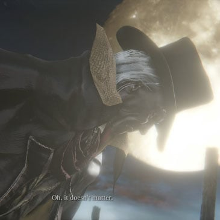
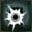
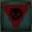

Gehrman, the First Hunter |
|||
|---|---|---|---|
|  | |||
 |
Location | Drops | |
| 14293 | 128000 | Hunter's Dream | Old Hunter Badge |
| Defenses | |||
 |
 |
 |
-- |
| 150 | 150 | 150 | -- |
|  |  |
 |
 |
| 150 | 65 | 70 | 65 |
 |
 |  |
 |
| 999 | 999 | No | No |
[Warning: Ending spoiler ahead]
Gehrman, the First Hunter is a Boss in Bloodborne, and one of the three possible final bosses of the game.
"Oh, Laurence... what's taking you so long... I've grown too old for this, of little use now, I'm afraid..."
"Oh, Laurence... Master Willem... Somebody help me... Unshackle me please, anybody... I've had enough of this dream... The night blocks all sight... Oh, somebody, please...
"Hm hm hm ha ha ha... Dear oh dear, what was it? The Hunt? The Blood? Or the horrible Dream? Oh, it doesn't matter... It always comes down to the hunters' helper to clean up after these sort of messes."
"Tonight... Gehrman joins the hunt...."
Gehrman, the First Hunter Information
- You fight Gehrman if you choose the Refuse option when he presents you with 2 options after you talk to him, or if you attacked him in the Hunter's Dream after defeating Mergo's Wet Nurse.
- Defeating him will initiate a cut-scene. If you have consumed 3x One Third of Umbilical Cord, you will fight the Moon Presence, otherwise the game will end and you will obtain the Honoring Wishes trophy.
- If you choose to submit your life, or defeat him without consuming the umbilical cords, the game will end and a New Game Plus will immediately initiate, so if you don’t consume the cords or plan to accept his offer make sure you have all your affairs are in order before you proceed.
- If you die to Gehrman during the fight, you will respawn in the Hunter’s Dream. When you re-enter the boss arena, Gehrman will already be hostile. There is no going back on your decision to refuse his offer: if you refuse you will have to fight him until you defeat him.
- Gain 1 Insight for finding the boss and 3 Insight for killing him.
Locations
Drops
- Old Hunter Badge
- Blood Echoes NG (128,000) (64,000 for co-operator), NG+6 and so on (980,480)
- (no blood echoes are dropped if you take on Moon Presence)
Combat Information
- While using his scythe, Gehrman frequently uses a charge move that can be parried while he channels.
- Gehrman can be parried and riposted for the entirety of the fight. Whereas he is very fast and unpredictable in his third stage, he can still be staggered while he uses the charge move on his scythe. (need confirmation on other moves)
- Shoot as he slices horizontally with his scythe for easy parries.
- He usually gives two side-swings to approach you, after which he's open for a quick R1 attack. Immediately move backwards (walking or dodging) after hitting him once.
- When Gehrman switches to the curved sword and blunderbuss, it may be more effective to stay close to him and dash (hit O) around him as he attacks and then get in a quick hit at the end of a combo. This seems to be more effective than hanging back since it is then harder to get in a hit and he can also stagger you with his gun even if you're not attacking. The stagger seems to only occur when he's using his pistol as opposed to his blunderbuss.
- It is also possible that in his powered up form, he will go for a jump attack but get stuck on a ledge if you're close enough to one, giving you free attacks with minimal chance of taking damage.
- In scythe form, a fairly easy way to deal with it is to bait out one of his attacks and walk backwards. His attack will fall short, and you have time to hit him once and repeat. For his curved sword and gun, run towards him and roll right, if he rolls and shoots you'll get two free hits on him. Then back out, because he might retaliate quickly. His long combo ends in a ground slam with his curved sword and then a shoot with his gun, if you stay close, you can roll through the gun shot and get a hit in on him. Take the fight slow, and stay close to max health, as his scythe does massive damage.
- Gehrman can alternate between a blunderbuss and a heavy pistol. The heavy pistol takes a moment to charge before firing, and being hit by it will parry the player even if they are not performing any action when hit.
- Uses Burial Blade and a unique unobtainable blunderbuss.
- Uses "Quickening" to dramatically increase his mobility and deflect firearms. Using the Old Hunter Bone produces the same effect.
| Attack Name | Attack Description & Counter |
|---|---|
| Scythe Charge Attack | Gehrman pulls his scythe behind him before dashing forward and letting out two swift strikes. This move has good tracking, so timing your dodge is critical. Conversely, simply shoot him while he charges the attack for an easy parry. |
| Leaping Scythe Attack | Gehrman leaps forward while swinging his scythe. Keep on your toes as this attack has good range, a short start-up time, and can be performed immediately after a previous move. |
| Gun Blast | A single blast from his blunderbuss or pistol. Typically performed after a dodge or roll. Can parry the player. Can be dodged with proper timing. |
| Visceral Attack | Can occasionally land visceral attacks after parrying. |
| Sword Flurry | An extended flurry of sword swings. Performed after Gehrman transforms his weapon into its' blade form. Has good tracking, so may require multiple dodges to avoid. |
| Wind Gust | After jumping into the air, Gehrman swings his scythe, producing a quick series of damaging wind gusts. Has good tracking and a deceptively long range. Run away from Gehrman to avoid this attack. |
| Scythe Pull | Uses scythe to pull hunters toward him before slashing them. Dodge to the side or use gun for an easy visceral attack. |
| End of the Nightmare | Triggered when under 50% HP. Gehrman stops where he is and begins to channel energy. Shortly thereafter, a large blast of energy is released. Anyone within the area of effect will take high damage assuming they do not outright die. This move can be delayed with a rapid series of attacks. This is, however, a dangerous strategy largely suited to cooperative play. |
Strategies
1. Melee Strategy
Gehrman is a very fast and very aggressive foe. Most of his attacks with do a great deal of damage to a hunter of every level and a couple can even one-shot a player with 30+ vit. To prepare for this fight, equip runes that will give you more stamina, more health and ones that offer a health bonus for visceral attacks. Make sure to purchase Bolt paper/fire paper or level up your Tonitrus.
The key to this fight is patience, observation and persistance. As Gehrman is the first hunter, his fighting style is the same as yours, he has exactly the same mechanics you do, plus a couple more for good measure. When the fight starts, he'll walk slowly towards you and chances are he'll start by doing a charge attack with the Burial Blade. Hit him with your gun or if you have a fast enough weapon, get behind and do a quick charged attack and land a visceral. If you can manage this you're onto a great start.
When he charges the Burial Blade he will do a wide sweeping two hit combo that has devastating damage, so if you're not close to him when he starts the charge up, back off so you're less likely to take the full whack of the attack. His other attack to watch out for with the Burial Blade has him reaching out past your head and pulling you close into him. This in itself isn't greatly damaging but the follow up combo usually is.
While using the Blade, he will occasionally charge up and leap up into the air, swinging the blade and causing a shockwave to hit the ground. For this attack you want to get underneath him as the shockwave tracks slightly if you back off and has a wide arc of potential damage.
Stick close to Gehrman and bait out his attacks. Make full use of the dodging ability and keep a close eye on your stamina. One or two hits and then a quick escape is the best tactic to use in a straight melee fight as he retaliates quickly and hits very hard. When you've taken a third of hi***** points off he'll put the Burial Blade away and pull out a curved sword and a blunderbuss. Now he'll become more aggressive and actively try to stay close to you, no matter how much you back off. He'll attempt to parry you with the gun (which he can do) and he'll unleash several 5 or 6 hit combos with the sword. This is where the battle becomes rather balletic as you need to be quick on your feet, dodging his attacks and trying to land hits where you can. Gehrman will act in exactly the same way and the two of you will end up spending a lot of time in motion trading hits.
Around halfway through the fight he'll get into some open ground, extend his arms and start channelling energy. This wind up takes about 5 seconds, so get in behind him and use this as an opportunity for a free charge attack and visceral combo. Be warned, if you mistime this you'll end up being caught in an AOE blast which does huge damage. If you're across the other side of the arena when he does this, back off and let him do the blast.
Oddly enough, Gehrman himself can be knocked down by Burial Blade scythe charge attack.
2. Burial Blade Strategy / Blood Echo Farming
In order to acquire Burial Blade in the current NG, one must consume three One Third of Umbilical Cords before Gehrman's defeat. Once Gehrman is killed, wrap out from the subsequent fight by using Bold Hunter's Mark. once you acquired the Burial Blade, upgrade it to +9 and insert Blood Gem Imprints for boosting physical damage, the next step will be using Small Resonant Bell to become a co-operator. Once you're summoned, switched the Burial Blade to scythe form and spam charge attack to Gehrman, it'll continuously knock down Gehrman so the others can land their blows, once Gehrman is defeated, each time you can earn 64000 echos for each kill (or 128000 echos in case of Moon Presence)
3. Bowblade E-Z Strategy
Gehrman does not usually rush towards you and there is an easy way to defeat him if you have a decent damage dealing Simon's Bowblade. Simply lock onto Gehrman, walk backwards, and shoot him. Remember to have enough Stamina for a quick, emergency dodge. In his later stages you will likely encounter his airborne attack and a few lunges towards you, requiring you to perform a quick evasive maneuver. Use the Charged R2 Attack often for maximum damage. Bring enough Blood Vials to convert into Blood Bullets when your stock of Quicksilver Bullets deplete.
4. Gatling Gun Strategy
Gehrman can be easily staggered by Gatling Gun during his first phase, as long as one can stop him from buffing with quickening, he can be staggered to death in the entire fight.
Videos
(( Please respect these video posting guidelines))
-  JudasBlitzkrieg-
JudasBlitzkrieg-
-  ZOMBIEHEADZoCOM-
ZOMBIEHEADZoCOM-
-  Mhazard-
Mhazard-
Notes & Trivia
- You CAN co-op & pvp on this area. You must first have triggered Gehrman as a boss and exited the boss arena by being killed or using a Bold Hunter's Mark. You can also co-op the following boss if you have defeated Gehrman and meet the requirements.
- Upon defeating him the Burial Blade can be acquired from the bath messenger shop in NG+ for 60000 Blood Echoes. (NG+ not necessary. If you fight "Moon Presence" after Gehrman you can use Hunter's Mark to return outside the boss area and still purchase this weapon.)
- Both of his forms can be parried.
- During first form, one handed fist light attack can stagger Gehrman for 4 times, any further punch will not stagger him until his moveset is finished.
- Gehrman changes into a Top Hat, Henryk's Hunter Gloves and adds an unobtainable cape onto his Hunter Garb upon initiating the boss fight rather than wearing his usual unique attire.
- If one muted the music and sound but voice, one can record Gehrman's dialogue during the cutscenes without sound, but not his grunt during battle.
- When killed, Gehrman raises his arms in an almost perfect "make contact" gesture, before falling to his knees, looking to his hands and then falling forward. It should also be noted that Lady Maria of the Astral Clocktower shares this same action upon death (with the exception of groaning rather than speaking final words.
- If one hits Gherman after killing Mergo’s Wet Nurse it will trigger the fight without needing to speak to him (Useful if you’re frightful that you’ll accidentally trigger the wake up ending).
 Anonymous
AnonymousYou get insight by seeing an old man stand up whilst changing his clothing at the speed of light
- Anonymous
parrying is so ****ing op i got this guy in 2 tries just because i parried every single time i got into his attack range
- Anonymous
- Anonymous
After returning from Elden Ring, this is how you finish your game
- Anonymous
For anyone who is struggling, parrying is the key. Or it was for me anyways. Put on the Clawmark Rune (Up's Visceral attacks by 20%), or the Blood Rapture Rune (Visceral attacks restore HP), but I would recommend Clawmark so that you do more damage and end the fight faster. Learn the timing for a parry in each phase. When he has the Scythe out, wait until he does the charge attack where he lowers and rotates the scythe behind him. The key is to parry right AFTER he finishes charging and has just started the swing at you. In my experience, if you try to shoot him anytime before he finishes charging and has begun the swing, it won't work. When he has the curved sword, it's during his roll animation. Right as he is finishing the roll, shoot JUST before he is about to fully stand up. Make sure to back off a long ways when you see him charging up. In his 3rd phase he will switch between the Scythe and curved blade, except he's stronger, faster, and has a wind attack. Wait to dodge the wind until just before it hits you. In general, try to keep your distance from him, and backstep 3 times when he does his 2-3 hit scythe combo to be safe and watch for your openings. If you can get the proper timings down, you can end the fight in between maybe 5 to 9 parries, or somewhere around there, depending on your stats. For context, I was level 94 with 35 VIT, 23 END, 36 STR, 28 SKL and very low Bloodtinge and Arcane (10/12). I also used the Clawmark, highest tier Communion and Great Lake runes. Good luck!
- Anonymous
- Anonymous
Fun fact:
Gehrman Will not drop blood echoes of you eat 3 unbilical cord
- Anonymous
Yikes. He's way too easy. I feel like it would have been okay for him to be a pushover if the "true" final boss that comes after him was much harder than he is... but it's the opposite. Moon Presence is even easier! It's kind of a lackluster challenge in the end. I'm not sure how to feel about it, honestly. I liked the game, though. Despite having a really brutal beginning section, the game is overall significantly easier than any other soulsbourne title in my opinion.
- Anonymous
- Anonymous
You can apparently cheese this boss with the wirligig saw +10. He keeps losing his posture so you can just keep on attacking and he will not be able to finish his attacks
- Anonymous
An amazing final boss. Difficult enough to be a very challenging fight, but also forgiving enough that most new players consistently beat him on their first or second try. Not to mention you get to buy his awesome looking scythe when you kill him and the plot twist that comes when this feeble looking old man turns out to literally be the grim reaper in human form.
- Anonymous
this guy was pathetic! deacons of the deep were harder than he was!
- Anonymous
- Anonymous
A question: i had entered the gate where gherman is sitting and i started the dialogue without refusing or accepting, but leaving without clicking anything. Now, if before entering the gate i consumed three umbilical cords, can i fight the moon presence (and then take the burial blade before the ng +) or is it too late and after defeating gherman will the ng + start? I ask because on the various sites they say different things. Thanks in advance of the answer :)
- Anonymous
- Anonymous
You can not open him up for a visceral attack by backstabbing him when he is channeling the moon presence's energy. Attempted with fully charged kirkhammer R2 attack. Idk if it was patched out or what but it is not possible to do that
- Anonymous
Even though it constantly 1HKOs me, I love in phase 2 when he uses that really fast L-shaped dash in scythe form. It just looks so sick. I kind of wish that whenever it connected, it would just show your hunter's head fly off, since it's apparently that lethal.
Now if only we could learn that flying whirlwind thing, lol.
- Anonymous
how to beat this sob get 40 arcane and spam executioner gloves i will melt like a fckin butter
- Anonymous
Kill gehrman with heir-2, heir-3, and moon-3 for visceral finish, or all moons for normal kill, BEFORE using 3 cords. Bold hunter’s mark out ASAP right after prey slaughtered. Get souls.
Use cords, fight moon presence with same rune setup and same finisher, thank yourself for a good 3-4 levels.
Learn to speedrun the game relatively quickly, 25 more playthroughs of doing that at 1 hour a playthrough and you too can have a max level female hunter called ***** Envy
- Anonymous
- Anonymous
- Anonymous
Probably due to the fact that you didn't fight gascogne with a +10 Ludwig blade, but that might just be me
- Anonymous
That cutscene is one of the most badass cutscenes I seen in games. Ludwigs follows up behind.
- Anonymous
Gherman has a few more lines that aren't listed here, if someone could add them. I'd do it myself but my game was in fukken spanish
- Anonymous
Super easy to cheese with Executioner's Gloves. Stay mid distance and fire it off, IF he dodges (often he doesn't), he will only dodge once & not far enough to escape the spell since it tracks. VERY simple to get him down to 50% hp @40 Arcane, probably the right combo of high Arcane, extra bullets & extra blood vials to sac for blood bullets would make it even easier. Can always parry/stagger him here and there to spread out the spell usage or burn the last 1-2 blood bullets so you don't waste any.
- Anonymous
can someone explain why he tries to kill us? i’m stupid and haven’t been paying much attention to the story. i jus wanna know why he turns hostile cause he seemed so nice earlier :(
- Anonymous
- Anonymous
Wow. I used untricked ludwigs blade +10 and standard pistol - he was quite an easy target for visceral attacks. I wiped like 10 times more on Gascoigne than on this guy, got him on my 2-nd try.
- Anonymous
- Anonymous
- Anonymous
Gehrman, my mentor, the night has been long, and this is what it all comes to. You have suffered long enough..Now let me set you free from this curse. It’s the least I can do for my oldest friend. May your soul find it’s long deserved slumber, and may you never have to suffer again.
- Anonymous
- Anonymous
In my experience, using Blunderbuss gives more chances of Visceral than other guns. Earlier I was using Evelyn but was rarely getting VAtks but as soon I switched to Blunder got atleat 6 - 7V Atks and defeated him easily.
- Anonymous
i killed him but i got no blood echoes does anyone know why this happened and if so is there any way to get them
- Anonymous
Hey Oedon, pass that milk-weed. Tonight, Gehrman hits the blunt
- Anonymous
thx for this wiki page it helped me kill German way easier when i thought him
- Anonymous
Because it's not part of the souls series until you beat up an old guy while sad music plays in the background
- Anonymous
- Anonymous
This is my First time ever playing this game and I was sad to press the refusal option because I wanted the burial blade and now I'm mad because when I hit the refuse button and the cutscene started my older Brother decided it was a good idea to play a song with a saxophone as loud as he could causing me to miss the best line of dialogue ever. It frustrates me to no end at how infuriating that was. But thank you for letting me comment on a boss that is my ass more times than I can count and maybe in ng+ I might be able to hear it without interruption
- Anonymous
I saved and quit the game right outside the bossfight only to clip inside the area where you fight him. He didn't aggro or anything didn't fight back after hitting him. Does anyone know why
- Anonymous
I feel really sorry for this guy. I was overleveled by the time I got to him because I did DLC first and tried to kill the ***ing final boss in Ailing Loran Chalice. Defeated him in one try with LHB+10, dodging, R1 and sometimes parring. Was not a big deal honestly. Runes where HP for viscerals, Silver bulets for viscerals and +15% stamina. The moon presence was even easier, the only move that was annoying is when it lefts you with 1HP.
- Anonymous
finally killed this guy. i felt pretty bad for the dude during the whole fight. i just parried him as much as possible, i guess.
- Anonymous
I was very excited for this fight, this guy was so cool and i heard it was one of the hardest and coolest boss fights in the entire game... but i think i f***** up because i was a bit overleveled, around level 100. Beat him on the third try without too much effort with the beasthunter saif, and the moon presence got down just after him without dying, dodging and spamming R1, almost didn't aprecciate her attacks. I really enjoy having to memorice the entire moveset of a boss to have a chance, dying over and over again until i finally get it( especially with Ludwig, the orphan and the f****** dark beast of Loran) but this wasn't the case and now the game is over. I beat every single boss, including dungeons and i stopped leveling up at some point because i really wanted to enjoy those final battles, having like one million echoes without nothing to spend them with. I can't tell how sad i am right now. Can you recommend me a level in NG+ for these 2 to be a challenge? I hope i can enjoy them a second time.
- Anonymous
He has too much health. Feel like my attacks barely hurts him, and that’s with Ludwig’s Holy Blade +10
- Anonymous
hardest boss in main game for BL4. His every ATK can one shot you.
- Anonymous
gud at parry + wep buff = ez mode for this guy, just stay out of his AoE
- Anonymous
- Anonymous
The strategy that worked for me was basically switching between 2 approaches one is when he has the scythe and the other when he is in sword mode. When in scythe mode lure its attack by approaching and backing off repeteadly until he tries to grab you then, if he starts a second attack parry. The second is when in sword mode, just wait until he dashes towards you, and roll to his right if he's recovering after his combo attack once and repeat. Dont risk it and whenever he charges his AoE retreat as far as possible. Thanks to this video I could learn the pacing and finally beat it:
- Anonymous
Just needed to learn his attacks, i'm currently helping people on the "Bloodborne Multiplayer+" community kill their bosses, if anyone here needs help, i'll check back in a few hours.
- Anonymous
So nothing was real? Nobody died and it was all just a bad dream? What about the people behind the doors, Laurence, the church, the monsters and the elder gods then? Are they parts of the dream aswell? Are they fantasy, too? What did we even fight all the time? Ourselves?
- Anonymous
"When killed, Gehrman raises his arms in an almost perfect "make contact" gesture, before falling to his knees, looking to his hands and then falling forward. It should also be noted that Lady Maria of the Astral Clocktower shares this same action upon death (with the exception of groaning rather than speaking final words)." My comment on this before was deleted for some reason, but this is just factually wrong. It's not even close to being right. Someone remove this.
- Anonymous
For cosplaying his boss form, I’ve found that the Yamamura hat actually looks a little better than the standard top hat. It’s tall enough and has the nice warped brim, and hides the eyes a little better. He doesn’t actually wear Henryk’s gloves, as Gehrman’s feature a metal gauntlet, but they’re close enough. In case anyone’s interested...
- Anonymous
I refused him at the end of the game, started the cutscene, then quit out because I didn't eat the umbilical cords. Now he's gone. Is there any way to get him back?
- Anonymous
If you have a friend help you he can be put into visceral by hitting him in the back with the augur of ebrietas which only cost 1 bullet so it’s an assured visceral rather than timing your shots with a gun
- Anonymous
Killed this guy in NG - parried/visceral a few times and then, more through luck than judgement, trapped him in the small path by the fog gate. He couldn't dodge away, so I mashed R1 untransformed LHB, which got him down to about 30% health. I then just fished for parries for the rest of the fight, healing every time he damaged me. It worked (just about.)
- Anonymous
After many try i finally defeated him twice for different ending. First phase fight strategy was to stagger with firearm and visceral attack, in second phase when he leaps in air and make shockwave attack, I tried the guide posted here to stay close with him first but this strategy didn't work for me as i was constantly hit by shock wave and then he was near me when i am recovering and will kill me with one shot as i HP got low due to shock wave hit. I followed different strategy. I kept my distance from him in second phase attack.Only when he is equipped with scythe, he will leap in air.So i went as far away as i can when starts to leap in air and roll away further as shockwave about to come. Only 1/2 times shockwave hit me but i was able to restore health as he was far away for him. So anyone struggling with shockwave should try this strategy. I used Axe transform with bolt and fire, dodged when he about to attack and landed 1/2 attack on him. I kept a distance and used cocktail and knives in second phase to reduce his health as he won't attack often when there is a distance.
In second phase one key thing to remember is when he switches between his scythe and other weapon with firearm. Be careful when he switched to scythe as he will attack fast and will leap in air. But when he switch to other weapon then you have a chance to hit 1/2 attack after he fires a gun. Hope this helps someone.
- Anonymous
I don’t know if this has been said but it is possible to stun him enough and “glitch” him so he stays in his second phase for the rest of the fight. When he does the roar ( not the AOE) as long as you land enough hits (mainly with a partner) it could work.
- Anonymous
Gehrman was one of the easier bosses, simply for the fact that using the Augur of Ebrietas will either stagger him allowing a Visceral attack, or knock him over completely. In addition, the Augur of Ebrietas's low Quicksilver Bullet consumption allows for striking Gehrman, giving you distance to press the D-pad up to draw more QS Bullets from your health, Heal or Augur again, dash in and strike to refill your health. I must have landed six Visceral attacks in my most recent battle. However, the Augur of Ebrietas will not interrupt his big attacks, like when he hovers in the sky to slash at you, etc., so be ready to dodge, then strike!
- Anonymous
Got him on my 6th or 7th try, and it was absolutely epic- used hunter axe +10 (my first and favorite weapon still) and didn‘t perry- mostly because I‘m not good at perries unfortunately. But it was so much fun. He is so fast and brutal and in the end I had no blood vials left, only like 20% health and gehrman had like probably 5%... he was charging up an attack, I was charging up L2, it was him or me, and mine just triggered slightly before his...and that was his death. I just got lucky I guess, but still, this was epicness and storytelling right out of the fighting gameplay, absolutely gorgeous:):):)
- Anonymous
Gehrman is my absolute favourite boss(at least from those I've fought so far, I missed a few on my first playthrough, and don't have the DLC). The whole illusion he kept up of being a crippled and frail old man throughout the game, until he stands up and basically becomes the embodiment of death itself. His aesthetic is so badass, the tattered robes, hat and scythe really make him seem like the grim reaper, and the setting for the battle is also a really great choice and really gives a "last stand" vibe.
- Anonymous
- Anonymous
- Anonymous
I hate people who cheese bosses like this or even parry him actually. Just like Gwyn the fight needs to be enjoyed.
- Anonymous
I tried 5 or 6 times with LHB and it just wasn't cutting it. Switched to the tonitrus and that cleared the problem right up on my first try with it. That little bug zapper isn't good for everything, but there are bosses in this game that it just FRIES, and Gehrman is one of them. Now he's got so many gigawatts in him he's back to the future.
- Anonymous
gehrman is a difficult boss but I just killed him at new game +6, so I think im alright
- Anonymous
I just absolutely ultra-cheesed Gehrman. I'm level 80, Arcane 60, with formless Oedeon equipped. All I did was cast A Call Beyond, doing ~1000 dmg each, and kept out of range. Done in about a minute with no damage taken.
- Anonymous
Need some help with this guy; I want to get his burial blade before the real final battle and he's kicking my ass to the point where I ran out of blood vials. HMU, my IGN is Mitoonuh.
- Anonymous
Some of the strategies are*****. Kill him, warp before the cutscene to get the burial blade, upgrade it and kill him again.. for freaking echoes?! I mean you already killed him WTF. There's lots of ways to earn echoes and you chose Gehrman? Would rather farm somewhere else than waste my time as I'm sure there are better ways to get echoes.
- Anonymous
Unobtainable cape?? I thought it was the charred hunter garb?
- Anonymous
- Anonymous
plus a couple more for good measure? who is writing this cringey garbage?
- Anonymous
tfw Gehrman almost kills you with his left-right scythe sweep, but trips on a tombstone and his attack terminates early
- Anonymous
a broken and overpowered boss with broken mechanics and hitbox, he does NOT move like you, he zig zags, this is a dissappointing boss fight. my hitbox is broken as well, as i don't damage him when i can see that my sword should connect, but then again, from software is known for leaving bugs in the code and call them features. thanks fextralife for the walkthrough, i have enjoyed this game until gehrman
- Anonymous
So i just killed gehrman and saw the cutscene with the moon presence. I started the fight because i consumed the umbilical cords. Then after the cutscene i left the game to get his Scythe for the moon presence fight, but when i quit and got back in i was outside but had 0 Blood echos. I thought they were in the field but i only picked up 365.
69/10 would lose 128k blood echos again.
- Anonymous
So i just beat him in ng+ and it seemed like he was doing increased damage from my last play through which was about 4 days ago
- Anonymous
I need help with this guy. He is kicking my butt all day. Any help is appreciated.
- Anonymous
For the dialogue there is one missing it's his last words when you kill him
- Anonymous
"His fighting style is the same as yours"
Oh really I must have missed the item that enables me to fly
- Anonymous
I think i've found somekind of glitch when i left the game directly to the ps4 menu (your character needs to be located on the workshop near the area where you can fortify them and then when i came back i triggered this dialog
- Anonymous
I've noticed that when he has about 15% of his health left he insta hits me!
- Anonymous
Why does everyone say for certain gehrman isn't the guy at the beginning of the game.... he has a freaking scythe that looks almost identical to the one gehrman has...
- Anonymous
In case people want to co-op this boss for blood echoes, here's some important info. If the other person wants to fight the moon presence but wants to die to it for the burial blade, you will be left with nothing and it will have been a waste of time. Just wanted to prepare some people in advance!
The choir part of his theme is so good. I can never get bored of it till the end of my days.
0
+10
-1